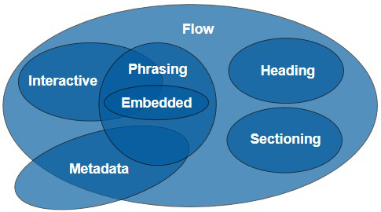

HTML5 Elements
- HTML5 엘리먼트 규칙
- HTML5를 구성하는 컨텐츠들에 대한 소개와, 새로 추가된 신규 엘리먼트들의 문법 및 사용 방법을 설명한다.
HTML5 Element
- ※ HTML5 는 현재 Last Call Working Draft 상태 이다.
- 브라우저별 HTML5 지원 현황은 fmbip.com에서 확인할 수 있다.
기본 규칙
기본 규칙은 Base HTML Element에 나온 규칙을 따른다.
컨텐츠 모델 (Content Model)

HTML5의 요소는 0개 이상의 카테고리에 속하며, 각 카테고리는 서로 특성이 비슷한 요소끼리 묶어둔 분류이다.
위 이미지에서 보이는 것처럼, HTML5는 다음과 같은 카테고리들을 사용한다.
또한, 특정요소는 폼관련 요소로 따로 분류하여 다양한 폼 관련 처리 모델에서 세부적으로 분류한다.
몇몇 요소들은 특정 요소만의 독특한 요구사항을 가지고 있으며, 어느 카테고리에도 속하지 않는다.
메타데이터 콘텐츠 (Metadata Content)
- 메타데이터는 나머지 내용의 표현 및 행동을 설정한다.
- 다른 문서와의 관계를 설정하거나, 미분류 정보들을 포함한다.
base, command, link, meta, noscript, script, style, title
플로우 콘텐츠 (Flow Content)
- 문서및 어플리케이션의 Body에서 사용되는 대부분의 요소는 플로우 콘텐츠로 분류 된다.
a, abbr, address, area(map 요소의 자식 요소인 경우), article, aside, audio, b, bdi, bdo, blockquote, br, button, canvas, cite, code, command, datalist, del, details, dfn, div, dl, em, embed, fieldset, figure, footer, form, h1, h2, h3, h4, h5, h6, header, hgroup, hr, i, iframe, img, input, ins, kbd, keygen, label, map, mark, math, menu, meter, nav, noscript, object, ol, output, p, pre, progress, q, ruby, s, samp, script, section, select, small, span, strong, style (scoped 속성이 있으면), sub, sup, svg, table, textarea, time, ul, var, video, wbr, text
- 일반적으로 아무 플로우 콘텐츠 모델을 포함할 수 있는 콘텐츠 모델은 최소한 하나의 공백이 아닌 텍스트 노드를 포함하거나, 또는 최소한 하나의 임베디드 콘텐츠(아래 다시 설명)를 포함하여야 한다. 이러한 결과로 del요소 및 그 자식 요소들은 del요소의 부모 엘리먼트가 될 수 없다.
- 위의 요구사항은 강력하게 지켜야 할 내용은 아니며, 스크립트로 데이터를 채우기 위해 자리를 잡아 두는 목적 등의 정당한 이유로 요소가 비어 있을 수 있다.
섹션 콘텐츠 (Section Conetnt)
- 섹션 콘텐츠는 헤딩과 푸터의 유효범위를 지정한다.
- 제목과 그 내용을 포함하는 범위를 지정한다.
article, aside, nav, section
- 섹션 콘텐츠 요소는 헤딩과 아웃라인을 포함할 수 있다.
헤딩 콘텐츠 (Heading Content)
- 헤딩 콘텐츠는 섹션(섹션 콘텐츠나 또는 헤딩 콘텐츠에 의해 암시적으로 마크업 된 영역)의 헤더를 정의한다.
h1, h2, h3, h4, h5, h6, hgroup
프레이징 콘텐츠 (Phrasing Content)
- 프레이징 콘텐츠는 문서의 텍스트이며, 그 텍스트를 단락 내부레벨에서 마크업을 하는 요소이다.
- 프레이징 콘텐츠가 모여 문단을 구성한다.
a(프레이징 콘텐츠만을 포함하는 경우), abbr, area (map 요소의 자식요소인 경우), audio, b, bdi, bdo, br, button, canvas, cite, code, command, datalist, del (프레이징 콘텐츠을 포함하는 경우), dfn, em, embed, i, iframe, img, input, ins (프레이징 콘텐츠만을 포함하는 경우), kbd, keygen, label, map (프레이징 콘텐츠만을 포함하는 경우), mark, math, meter, noscript, object, output, progress, q, ruby, s, samp, script, select, small, span, strong, sub, sup, svg, textarea, time, var, video, wbr, text
- 일반적으로 프레이징 콘텐츠 모델 요소를 포함할 수 있는 요소들은 최소 하나의 공백이 아닌 텍스트를 포함하거나 또는 최소 하나의 임베디드 콘텐츠를 포함하여야 한다.
임베디드 콘텐츠 (Embedded Content)
- 임베디드 콘텐츠는 다른 리소스(음악, 영상 등)를 문서에 삽입하는 콘텐츠나, 문서에 삽입된 다른 형태에서 유래한 콘텐츠를 말한다.
audio, canvas, embed, iframe, img, math, object, svg, video
- HTML의 네임스페이스에 속하지 않으면서, 콘텐츠를 포함하고 있지만 메타데이터가 아닌 것들을 임베디드 콘텐츠라 한다. (SVG등)
- 임베디드 콘텐츠 요소 중 일부는 외부 리소스가 사용이 불가능 할때 사용할 대체 콘텐츠를 갖는다.
인터랙티브 콘텐츠 (Interactive Content)
- 인터랙티브 콘텐츠는 사용자와의 상호작용을 위해 사용되는 콘텐츠이다
a, audio (controls 속성이 있으면), button, details, embed, iframe, img (usemap 속성이 있으면), input (type 속성이 hidden 상태가 아니면), keygen, label, menu (type 속성이 toolbar 상태면), object (usemap 속성이 있으면), select, textarea, video (controls 속성이 있으면)
HTML5 New Element
섹션, 헤딩 관련요소
- <section>
-
- Category: Flow Content, Section Content
- 의미: 일반적인 문서의 섹션을 의미한다.
- 사용:
- 내용이 문서의 개요에 명시적으로 나타날때 사용하는것이 적합하며, 의미 부여 없이 스타일 적용만을 위한 범용 컨테이너가 아니다.
- 장이나 절 단위로 사용하며 Heading 요소를 사용하여 제목을 넣어 사용한다.
- <article>
-
- Category: Flow Content, Section Content
- 의미: 독립적으로 구성 할 수 있는 콘텐츠로 별도로 배포하거나 재사용하기 위한 구조이다.
- 사용:
- article 요소끼리 중첩이 가능하나 원칙적으로 외부 article 요소의 내용과 관련이 있어야 한다.
- article은 자체로 완전한 하나의 개별 콘텐츠로 그 내부에 section 요소를 포함할 수 있다.
<article> <h1>표제</h1> <section> <h2>부표제</h2> <p>내용</p> <ul> <li>리스트 내용1</li> <li>리스트 내용2</li> <li>리스트 내용3</li> </ul> </section> </article>
- <nav>
-
- Category: Flow Content, Section Content
- 의미: 네비게이션 사이트 내에 다른 페이지로 링크되거나, 한 페이지 내부에서 이동하는 링크에 사용한다.
- 사용:
- 링크 모두를 nav에 둘 필요는 없으며, 의미상 네비게이션에 해당할때 사용한다.
- footer나 그 외의 section등에서 사용되는 링크는 그 자체의 요소를 사용한다.
<nav> <menu> <li><a href="#">메뉴1</a></li> <li><a href="#">메뉴2</a></li> <li><a href="#">메뉴3</a></li> </mene> </nav> <article> <h1>표제</h1> <section> <h2>부표제</h2> <p>내용</p> <ul> <li>리스트 내용1</li> <li>리스트 내용2</li> <li>리스트 내용3</li> </ul> </section> </article>
- <aside>
-
- Category: Flow Content, Section Content
- 의미: 주 콘텐츠와 간접적인 관계인 콘텐츠를 표현한다.
- 사용: 블로그의 사이드바 형태로 표현되는것이 일반적임
- <header>
-
- Category: Flow Content
- 의미: 페이지의 헤더를 나타낸다.
- 사용:
- 콘텐츠 목차, 검색 폼, 관련 로고 등을 포함하는 래퍼 요소로 사용 가능하다.
- 섹션 콘텐츠가 아니므로 섹션을 설정하진 않음. 그룹화를 위한 요소이다.
- <footer>
-
- Category: Flow Content
- 의미: 페이지의 풋터를 나타낸다.
- 사용:
- 문서 작성자, 관련 문서의 링크, 저작권자 등과 같은 콘텐츠를 작성한다.
- header 요소와 마찬가지로 섹션 콘텐츠가 아니므로, 섹션을 설정하지 않음. 그룹화를 위한 요소이다.
콘텐츠 그룹화요소
- <figure>
-
- Category: Flow Content, Sectioning Root
- 의미: 사진이나 코드 등의 콘텐츠와 캡션을 의미상으로 연결하고 싶을때 사용한다.
- 사용: figcaption 요소(캡션)는 필수는 아니지만 사용한다면 요소 처음이나 끝에 와야 한다.
- <figcaption>
-
- Category: None
- 의미: figrue 요소에 작성된 콘텐츠의 캡션을 표현한다.
텍스트레벨 시맨틱 요소
- <time>
-
- Category: Flow Content
- 의미: 24시간 형태에서 시각 또는 그레고리력에 의한 일자를 표현함. 시간대를 선택할 수 있다.
- 사용:
- 일자는 연월일 형태의 문자열로 작성하며 연도는 네자리로 값이 0보다 커야한다. 연월일 사이 구분은 하이픈(-)으로 한다.
- 시간은 시분초 형태의 문자열로 작성하며, 24시간 표기를 따른다. 시분초 사이 구분은 콜론으로 한다.
- 일자와 시간을 연속에서 작성하려면 일자 작성 후 T를 붙이고 시간을 작성한다.
- 시간대는 시간표기 뒤에 +나 -를 표기하고 그리니치 표준시로부터의 시차를 표기하면 된다.
- 속성:
- pubdate
- 불린 타입으로, 작성을 하면 값을 지정한 것으로 인식한다.
- 작성된 시각은 엘리먼트에서 가장 가까운 부모 article 요소를 작성한 시간을 나타나게 되며, 부모 article요소가 없을 시에는 문서를 작성한 시간이 된다.
- 브라우저를 위한 속성으로, 페이지에 표시는 되지 않는다.
- datetime
- 실질적인 시간을 정의하는 값으로, 이 속성이 없다면 time요소의 내용이 명시하는 시간이 된다.
- pubdate
- <mark>
-
- Category: Flow Content, Phrasing Content
- 의미: 문서에서 다른 콘텐츠와의 관련성을 표시 하기 위해 참조 목적으로 하이라이팅한 텍스트 집합을 나타낸다.
- <ruby>
-
- Category: Flow Content, Phrasing Content
- 의미:
- 하나 이상의 구문 일부분에 루비 주석을 달기 위해 사용한다.
- 루비주석은 텍스트 주변에 나타나는 짧은 텍스트로, 기준이 되는 텍스트 위에 주석을 다는 형태를 의미한다.
- 사용: ruby요소 내에 기준 텍스트를 작성하고 rt나 rp요소로 해당 주석을 표현한다.
- <rt>
-
- Category: None
- 의미: ruby요소 내에 루비 주석을 표현한다.
- <rp>
-
- Category: None
- 의미: ruby요소 내에 루비 주석을 지원하지 않는 UA에서 루비 텍스트를 괄호로 둘러싸 표현하기 위하여 사용한다.
멀티미디어 요소
- <video>
-
- Category: Flow Content, Phrasing Content, Embedded Content, Interactive Content (control속성이 있으면)
- 의미: 동영상을 재생하기 위하여 사용한다.
- 속성:
- src: 비디오 파일의 URL을 지정한다.
- autoplay: 불린 속성으로, 자동으로 재생된다.
- controls: 불린 속성으로, 비디오를 제어할 수 있는 UI를 제공한다.
- loop: 불린속성으로, 반복 재생을 한다.
- height, width: 비디오 재생시 크기를 지정한다.
- poster: 이미지파일의 URL을 지정하며, 재생이 되기 전까지 표시될 이미지를 지정한다.
<video src="movie.ogv" controls poster="stop.gif" width="400" height="300"> <p>본 동영상은 html5 video태그를 사용하는 방법을 알려주는 동영상으로, <a href="movie.ogv">여기에서 다운로드 받을 수 있습니다.</a><p> </video>
video 요소 내부의 콘텐츠<video></video> 사이에 텍스트를 지정하면 해당 요소를 지원하지 않는경우 사용자가 콘텐츠에 접근할 수 있는 방법을 제시하는 대체 텍스트를 보여줄 수 있다.
하지만 이것이 접근성을 고려한 것은 아니며, 시청각 혹은 기타 장애를 가진 사람이 콘텐츠를 이용할 수 있도록 대체 수단이 될 수 있는 다른 미디어 혹은 접근성 도구(자막 제공 등)를 함께 제공하는 방법을 고려 해야 한다. - <audio>
-
- Category: Flow Content, Phrasing Content, Embedded Content, Interactive Content (control속성이 있으면)
- 의미:
- 음성을 재생 하기 위하여 사용한다.
- video요소와 마찬가지로 내부에 콘텐츠를 제공 할 수 있다.
- 속성:
- src: 비디오 파일의 URL을 지정한다.
- autoplay: 불린 속성으로, 자동으로 재생된다.
- controls: 불린 속성으로, 비디오를 제어할 수 있는 UI를 제공한다.
- loop: 불린 속성으로, 반복 재생을 한다.
- <source>
-
- Category: None
- 의미: 미디어 소스를 지정한다.
- 사용:
- 단독으로 사용 불가능 하며, video 요소나 audio 요소의 자식 요소로 사용된다.
- video 요소나 audio 요소의 src속성에 미디어 소스를 지정하는 대신 source로 미디어 소스를 지정하며, 다수의 미디어 소스지정이 가능하다.
- 속성:
- src: 미디어의 URL을 지정한다.
- media: 미디어 타입을 지정한다.
- type: 미디어의 MIME타입을 지정한다.
- <canvas>
-
- Category: Flow Content, Phrasing Content, Embedded Content
- 의미: 동적 그래픽을 표현한다.
- 사용: JavaScript로 HTML Canvas 2D Context API 에서 제공하는 메서드와 속성을 사용하여 2차원적 그래픽을 bitmap 캔버스 형태로 표현한다.
- <rp>
-
- Category: None
- 의미: ruby요소 내에 루비 주석을 지원하지 않는 UA에서 루비 텍스트를 괄호로 둘러싸 표현하기 위하여 사용한다.
폼 요소
- <datalist>
-
- Category: Flow Content, Phrasing Content
- 의미: 다른 컨트롤에서 사용할 수 있도록 미리 정의된 옵션 목록을 그룹화 한다.
- 사용:
- option 요소의 세트를 표현하며, option요소를 자식 요소로 작성하게 된다.
- 텍스트필드에서 서제스트 와 같은 내용을 표시할 수 있다.
- <keygen>
-
- Category: Flow Content, Phrasing Content, Interactive Content
- 의미: 비밀키와 공개키 쌍을 만들어 내는 컨트롤을 나타낸다.
- 속성:
- challenge: 속성을 사용하면 제출되는 키와 함께 서버로 전송된다.
- keytype: 키 타입을 지정한다. 기본값은 rsa이며, HTML5 스펙에서는 rsa이외의 값을 지정해도 RSA를 지원하도록 되어있다.
- <output>
-
- Category: Flow Content, Phrasing Content
- 의미: 계산 결과를 표현하는 요소이다.
- 사용: 자체 요소에서 계산을 위한 값을 갖는게 아닌 다른 요소에서 발생한 값을 계산하게 되므로 다른 요소와 관련을 맺게 된다.
- 속성: for: 계산에 영향을 미치는 요소와 output요소를 명확하게 관련을 맺게 한다.
<form onsubmit="return false"> <input name="a" type="number" step="any">+ <input name="b" type="number" step="any"> = <output onforminput="value = a.valueAsNumber + b.valueAsNumber"></output> </form>
- <meter>
-
- Category: Flow Content, Phrasing Content
- 의미: 특정 범위 내에서의 스칼라 측정 또는 분포 비율 등을 나타낸다.(예: 특정 투표율, 디스크 사용현황 등)
- 속성:
- min: 최소값을 지정하며, 기본값은 0 이다.
- max: 최대값을 지정하며, 기본값은 1.0 이다
- value: 게이지에 표시할 값을 유동 소숫점의 숫자로 지정한다.
- low: 낮은 영역의 기준값을 지정한다.
- high: 높은 영역의 기준값을 지정한다.
- optimum: 최적 점을 지정한다.
- [폼 요소 추가 속성]
-
- 공통속성: autofocus : 페이지 로딩 완료시 자동으로 해당 컨트롤에 포커싱이 된다.
- input 요소:
- type 속성
- - search: 검색 필드 기능을 한다.
- - tel: 전화번호 입력을 위한 타입이다.
- - url: 절대경로 URL 입력을 위한 타입이다.
- - email: E-Mail 주소를 입력 하기 위한 타입이다.
- - date: 년⁄월⁄일 입력을 위한 타입으로, 캘린더가 제공된다.
- - month: 년⁄월 입력을 위한 타입으로, 캘린더가 제공된다.
- - time: 시간 입력을 위한 타입으로 1⁄1000초 단위까지 입력이 가능하다.
- - datetime: UTC 일자, 시간 입력을 위한 타입이다.
- - datetime-local: 지역화된 일자/시간입력을 위한 타입이다.
- - week: 년도와 주차를 입력하기 위한 타입이다.
- - number: 한 줄의 숫자 데이터를 입력 하기 위한 타입이다.
- - range: 슬라이더 형태로 숫자 범위 데이터를 입력할 수 있다.
- - color: 컬러피커에서 컬러를 선택하여 데이터를 입력할 수 있다.
- autocomplete: 입력 필드 값의 자동 완성 여부를 지정. boolean 타입이다.
- list: 서제스트를 제공할 요소의 id를 지정한다.
- required: boolean 속성으로, 필수 입력 여부를 지정한다.
- multiple: 다수 값 입력 여부를 지정 콤마(,)로 구분한다.
- pattern: 컨트롤 값을 체크하는 정규 표현식 패턴을 지정한다.
- min: 컨트롤의 최소값을 지정한다. (숫자만 가능)
- max: 컨트롤의 최대값을 지정한다. (숫자만 가능)
- step: 컨트롤의 증가 단위 값을 지정한다.
- placeholder: 입력값에 대한 힌트를 지정한다.
- type 속성